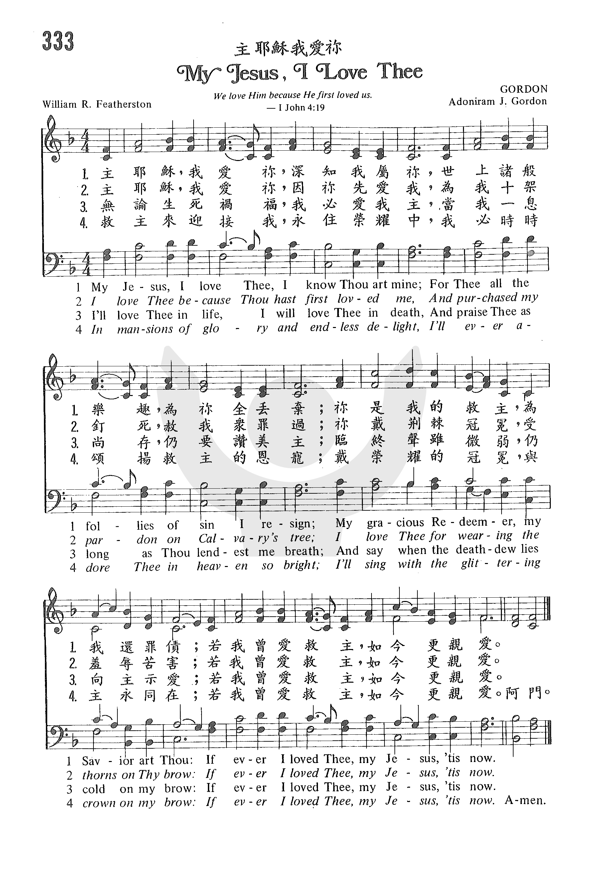

0366 0911 104 MY JESUS, I LOVE THEE _William
R. Feathersto 深愛耶穌 ▲
| 簡介
My Jesus, I love thee, I know thou art mine |
| The refrain presents the theme of the
text: "If ever I loved thee, my Jesus, 'tis now” a testimony of fervent
love for the Savior, a personal love that chooses for Christ and against
sin (st. 1), a thankful love for Christ's salvation, a love born in
response "because he first loved us" (1 John 4:19; st. 2), and a love
that leads through death (st. 3) to a vision of glory in heaven (st. 4)
. |
|
|
301. 主耶穌，我愛你， (My Jesus, I love Thee) |
1 My Jesus, I love thee, I know
thou art mine;
for thee all the follies of sin I resign;
my gracious Redeemer, my Savior art thou;
if ever I loved thee, my Jesus, 'tis now.2 I love thee because thou hast
first loved me
and purchased my pardon on Calvary's tree;
I love thee for wearing the thorns on thy brow;
if ever I loved thee, my Jesus, 'tis now.
3 I'll love thee in life, I will love thee in death,
and praise thee as long as thou lendest me breath,
and say when the deathdew lies cold on my brow:
If ever I loved thee, my Jesus, 'tis now.
4 In mansions of glory and endless delight,
I'll ever adore thee in heaven so bright;
I'll sing with the glittering crown on my brow:
If ever I loved thee, my Jesus, 'tis now.
Psalter Hymnal, (Gray)
|
主耶穌，我愛你，深知我屬你，
世上罪中宴樂，為你願捨棄；
因你是我救主，還清我罪債，
若我曾愛耶穌，如今更親愛。
主耶穌，我愛你，因你先愛我，
被釘十字架上，為贖我罪過；
你戴荊棘冠冕，受淩辱陷害，
若我曾愛耶穌，如今更親愛。
無論生活存留，我愛慕耶穌，
在世尚存一息，仍頌揚我主；
死亡陰影臨到，還讚美不住，
若我曾愛耶穌，如今更親愛。
在榮美的天宮，快樂無盡期，
在光明的美地，永遠敬拜你；
戴上華麗冠冕，歌頌大主宰，
若我曾愛耶穌，如今更親愛。
|
https://www.zanmeishige.com/tab/25701.html?songbook=1&index=333
第333首 -主耶稣我爱你

https://www.zanmeishi.com/tab/25701.html
 |
| |
|
http://www.hymncompanions.org/Oct/12/stream.php
主耶穌，我愛祢，深知我屬祢，
世上諸般樂趣，為祢全丟棄；
祢是我的救主，為我還罪債；
若我曾愛救主，如今更親愛。
主耶穌，我愛祢，因祢先愛我，
為我十架釘死，赦我眾罪過；
祢戴荊棘冠冕，為羞辱苦害；
若我曾愛救主，如今更親愛。
無論生死禍福，我必愛我主，
當我一息尚存，仍要讚美主；
臨終聲雖微弱，仍向主示愛；
若我曾愛救主，如今更親愛。
救主來迎接我，永住榮耀中，
我必時時頌揚救主的恩寵；
戴榮耀的冠冕，與主永同在；
若我曾愛救主，如今更親愛。
 (請點耳機收聽)
(請點耳機收聽)
保羅和西拉在獄中唱詩讚美神，監門自開，因而帶領了禁卒全家信主。約瑟在獄中解夢，而後作埃及宰相，使全家免於饑荒。 苦難常是自己或他人祝福的前奏。
這首詩的作者費司通（William Ralph Featherston, 1842-1878）是加拿大人。
在他得救信主時，為了表示他對主的感恩和愛忱，寫下了這首詩歌，當時他僅十六歲。他將原稿寄給姑母，經她鼓勵後發表。
嗣後，聖詩的編輯曾去信向作者的姑母求證，她告知當年的手稿已為家族珍藏，當作傳家寶。

一位聖公會的會督曾作以下的見證：
『有一位年輕著名的女伶，一次她在大城市中經過一門戶半開的房屋時，看到門旁榻上躺著一個臉色蒼白患病的少女，她心懷憐恤，就上前慰問她；想不到她反而被那病人慰勉。
那少女是一個虔誠的基督徒，她對病痛的忍耐和對神的順服，使她靈�堭o到滿足。
在交談下，女伶發現她自己所擁有的是暫時的，虛浮的，因此內心常感空虛和苦悶；而這個少女雖為疾病所纏，卻從主得喜樂和平安。
那少女力勸女伶接受耶穌為她的救主，結果她竟然接納了，而且生命也有了改變。 她意識到靈命與生活有關，而演藝生涯使她難以成為一個虔誠的基督徒，因此決定改行。
她父親是戲院經理，而她又是眾人羨慕的熠熠紅星，她的離去會影響整個票房收入和營業。 父親對她的請求竭力反對。 她深愛她父親，也不願棄之不顧，可是她更愛主。
最後她答應父親作當晚的演出，那晚戲院滿座，開幕後，她悄悄地走到台前，當掌聲停止，燈光照在她美麗的臉上，她開始唱：「主耶穌我愛祢……」觀眾震驚而受感動。
從此她走出了舞台，她父親在她的感化下，不久也信主。 父女同工，他們帶領了很多人信主。』
高登（Adoniram Judson Gordon, 1826-1895）是美國浸信會的牧師。
1870年，他在倫敦一本聖詩集上看到這首詩歌，對原來的配曲不甚滿意，經不斷的禱告和默想，作了今日各詩集一致採用的曲譜。

在一長途的火車上，疲倦的旅客中，有一對年青的夫婦忽然唱起這首歌來，唱完四節，大家請他們再唱，繼而有人唱和，最後全車旅客都齊聲同唱而忘卻了旅途的勞頓。
中英文聖詩集參考
英文歌名 My
Jesus, I Love Thee
頌主新歌 341
頌主新歌(中英雙語) 345
教會聖詩 333
生命聖詩 301
新聖詩 20
歡欣讚美 79
聖徒詩集 225
聖詩 352
恩頌聖歌 327
世紀讚頌 95
頌主聖詩 400
讚美詩(新編) 254
青年聖歌I 44
http://www.immanuel.net/cb/hymn/Hymn.asp?HymnID=17
主耶穌我愛你 My Jesus, I Love Thee
immanuel.net
費瑟史東 William Ralph Featherstone
主耶穌，我愛你，深知我屬你，
世上罪中宴樂，為你願捨棄；
因你是我救主，還清我罪債，
若我曾愛耶穌，如今更親愛。
My Jesus, I love Thee, I know Thou art mine;
For Thee all the follies of sin I resign;
My gracious Redeemer, my Saviour art Thou;
If ever I loved Thee, my Jesus, 'tis now.
這是一首大家所愛吟唱的感人詩歌,由於所唱的對象是向神,因此是個人對神禱告,最佳的靈修詩歌。這首歌,不但感動了許多人悔改歸主,同時也激勵了許多基督徒更熱心愛主,因此這首詩歌的發表問世,對後人的影響力實在是大有功效,是值得更多人來唱頌及大力推廣的。而這首詩歌的作者是費瑟史東(William
Ralph
Featherstone,1842-1870),他於1842年生於加拿大,可惜的是,他只活了二十八歲就去世了,但是他所創作的這首詩歌,卻是永被大家所紀念的。
據說這首歌是他於1858年,在悔改歸主那年所寫的,他將他心中對神的經歷與感受,化為他的禱告而寫成了這首詩,當他完成了這首詩之後,便將它寄給住在美國舊金山的姑媽,後來這首詩便一直沒有下文了。可是後來當這首歌第一次出現時,是在1872年,也就是費瑟史東死後的第二年,被收錄在英國倫敦某聖詩集中,是否是他的姑媽將它寄來英國發表,或是藉著別人流傳而傳到英國,就不得而知了,不過卻是受到很大歡迎,而當時這首歌雖然在倫敦被發表,可是竟然沒有人知道作者是誰,直到後來過了許多年之後才被發現,原來就是費瑟史東的作品。
後來,戈登博士(Dr. Adoniram J.
Gordon)為這首詩譜了曲,配上這調子非常的合宜,很能夠表現出這首詩的特色,且更容易幫助唱者達到與主親近,愛主更深的境界。建議此詩歌在唱時,速度不宜太快,當先默想主恩,培養足夠的情緒,並且安靜低聲的唱,才能真正表現出這首詩的精神。
http://www.congsing.org/my_jesus.html
Attributed to William R. Featherstone, 1862
Addressed to Jesus
|
My Jesus, I love thee, I know thou art mine; |
John 21:15; 1 Pet. 1:8; John 20:28; Eph. 6:9 |
|
for thee all the follies of sin I resign. |
Ps. 107:17; John 14:15 |
|
My gracious Redeemer, my Savior art thou; |
2 Tim. 1:10; Tit. 2:13–14 |
|
if ever I loved thee, my Jesus, ’tis now. |
|
|
|
|
|
I love thee because thou hast first loved me, |
1 John 4:19 |
|
and purchased my pardon on Calvary’s tree. |
1 Pet. 2:24 |
|
I love thee for wearing the thorns on thy brow; |
John 19:2, 5 |
|
if ever I loved thee, my Jesus, ’tis now. |
|
|
|
|
|
I’ll love thee in life, I will love thee in death; |
Phil. 1:20 |
|
and praise thee as long as thou lendest me breath; |
Job 27:3 |
|
and say, when the death-dew lies cold on my brow: |
|
|
if ever I loved thee, my Jesus, ’tis now. |
|
|
|
|
|
In mansions of glory and endless delight, |
Ps. 84; Luke 16:9 |
|
I’ll ever adore thee in heaven so bright; |
1 Pet. 1:4 Rev. 19:8 |
|
I’ll sing with the glittering crown on my brow: |
2 Tim. 4:8; James 1:12; 1 Pet. 5:4 |
|
if ever I loved thee, my Jesus, ’tis now. |
|
The great themes of this hymn are love and time—and more specifically, the
chronological course of our love for Jesus. We love our Savior now by keeping
his commandments (stanza 1) in response to his love for us, which was prior to
ours (stanza 2). Looking to the future, we promise to love him to the end of
our lives (stanza 3) and forever (stanza 4). Indeed, we aspire to “love our
Lord Jesus Christ with love incorruptible” (Eph. 6:24).
The parallel brow-imagery in the third lines of stanzas 2–4 symbolizes
the relation between his love for us, our temporal love for him, and what will
be our glorified love. The death we face is but a damp and fleeting reminder
of what our sins earned. The only thing our death-dew and his thorns have in
common, really, is a common location. Christ suffered the full wrath of God.
And yet, in so doing, he also revealed and earned glory—glory as of the only
Son from the Father, full of grace and truth. The long date-palm thorns
ironically prefigure the rays of a majesty so bright that they cause the
crowns his saints receive to glitter. He took on one crown so that he could
give us quite another.
In the end, all this thinking about time returns to the present. I can regret
the meagerness of my past love, but I cannot change the past. I can rejoice
about the future, knowing that someday my love will be perfected. But the only
love with which I can love right now is the love he has enabled me to have in
this moment. So, ultimately, this hymn is a hymn of devotion, as professed in
the refrain of each stanza and delicately highlighted by its chiastic relation
to the opening line: “My Jesus, I love thee. . . . if ever I
loved thee, my Jesus, ’tis now.”
The tune CARITAS
(GORDON) “crowns” the
third line’s imagery with high pitches, hairpin leaps, cadential non-chord
tones (measure 12), and a bass line that moves parallel to the soprano
(they’re always the same distance apart). But this does not come from nowhere.
There is parallel motion in lines 1–2 as well, between the tenor and
soprano. And, since the melody in line 3 is a variant of the melody sung twice
in lines 1–2, transposed two steps higher, the melody in line 3 is also rather
like the tenor part in lines 1–2, untransposed,
at least for its first three notes. Thus, in a part-singing congregation, the
voices seem to listen and respond to each other, and the beauties of line 3
well up from below—from the low voices to the high voices.
https://hymnary.org/text/my_jesus_i_love_thee_i_know_thou_art_mi
Born and raised in Montreal, Quebec, William Featherstone most likely wrote this
hymn at the age of sixteen on the occasion of his conversion and/or baptism. He
sent the text to his aunt in Los Angeles, who sent it to friends in London,
where it was published anonymously in the London
Hymn Book to
a now forgotten tune. Adoniram Judson Gordon found it, wrote a new tune for it,
and also published it anonymously in The
Service of Song for Baptist Churches.
It wasn’t until around 1930, fifty years after its publication, that enough
research had been done to establish Featherstone as the author, who had died at
the young age of 28. Today, it is a much loved hymn of assurance and confession
of faith, with words of comfort and peace. And perhaps bolstering the power of
the text is Featherstone’s story itself. A young man with no connections, who
simply wrote a poem one night about his own faith, has, unbeknownst to him, come
to bless millions. God certainly works in mysterious ways to use the gifts and
talents of his people.
Text:
The text remains almost entirely unchanged from Featherstone’s original poem of
four verses. A few hymnals, such as The United Methodist Hymnal and Worship
and Rejoice don’t include the third verse: “I’ll love Thee in life, I will
love Thee in death, and praise Thee as long as Thou lendest me breath; and say
when the death-dew lies cold on my brow, if ever I loved Thee, my Jesus, ‘tis
now.” The Baptist Hymnal 2008 changes the third line of the fourth verse
to “And singing Thy praises before Thee I’ll bow,” rather than “I’ll sing with
the glittering crown on my brow.”
Tune:
The tune GORDON was composed by Adoniram Judson Gordon and first published in
1876. Gordon claimed that, “in a moment of inspiration, a beautiful new air sang
itself” to him (Psalter Hymnal Handbook). The tune does not need much in
the way of accompaniment – perhaps light piano, or even just a violin adding a
harmony line. The vocal harmonies for this tune are easy to find and add a
richness to both tune and text. Examples of building with harmonies throughout
the song can be found in both Selah’s version of the hymn, and the Jimmy
Swaggart trio’s version, which also includes a great key change into the last
verse.
Because of the simple melody, this is a hymn that can be easily paired with
another song to be sung right afterwards. Consider singing “How Deep the
Father’s Love for Us,” and ending with just the first verse of “My Jesus I Love
Thee” a cappella: singing without accompaniment solves the issue of finding the
same key for both songs.
Notes
In 1870 Featherstone's
text came to the attention of Adoniram J. Gordon (b. New Hampton, NH, 1836;
d. Boston, MA, 1895), an evangelical preacher who was compiling a new
Baptist hymnal. Because he was unhappy with the existing melody for this
text, Gordon composed this tune; as he wrote, "in a moment of inspiration, a
beautiful new air sang itself to me." Named for the composer, GORDON was
first published in the 1876 edition of Caldwell and Gordon's The
Service of Song for Baptist Churches.
Gordon, who was named
after Adoniram Judson (1788-1850), the pioneering Baptist missionary to
India and Burma, was educated at Brown University, Providence, Rhode Island,
and Newton Theological Seminary, Newton, Massachusetts. After being ordained
in 1863, he served the Baptist Church in Jamaica Plain, Massachusetts, and
the Clarendon Street Baptist Church, Boston. A close friend of Dwight L.
Moody, he promoted evangelism and edited The Service of Song for
Baptist Churches (1871) as well as The Vestry Hymn and Tune
Book (1872). Both Gordon College and Gordon-Conwell Theological
Seminary are named after Gordon.
Sing this rounded bar form
(AABA) tune in harmony throughout. It is a beautiful candidate for singing
with little or no accompaniment. Do not rush the long phrases.
--Psalter Hymnal
Handbook, 1989
When/Why/How:
This response to God’s love can be sung at any time, but I recommend two
specific spots in the service: after the Assurance of Forgiveness, and during
the Lord’s Supper. The first verse especially reflects our own brokenness: “for
thee all the follies of sin I resign.” We go on to reflect on what Christ has
done for us in that, to paraphrase 1 John 4:10, He loved us and died for us as
an atonement for our sins. What is there left to do in such a moment of
reflection but to offer our hymn of praise and adoration? The second verse, in
its remembrance of the Passion, makes this an especially beautiful selection for
the Easter Season.
This hymn also makes for a powerful declaration of trust at funerals. The third
verse particularly speaks of our ongoing hope in Christ, and could also be a
celebration of the love for Christ seen in the life of a loved one remembered.
Notes
Those that say youth is
wasted on the young might be surprised to hear that William Ralph
Featherstone (1846-1873) is believed to have written "My Jesus I Love Thee"
at the age of 16!
Featherstone, a Weslyan
Methodist from Montreal, wrote the text at the time of his conversion and
sent it to his aunt in Los Angeles. Somehow, the poem made its way to
England where it was published anonymously in The London Hymn Book two years
later. Adoniram Judson Gordon (1836-1895), who was compiling a Baptist hymn
book, liked Featherstone's text, but decided it needed a better tune than
the one that was used in The London Hymn Book, so he wrote a new tune for it
which he published in The Service of Song for Baptist Churches. This is the
tune that is still used today.
It's astounding the
variety of people, lands, and circumstances that came together in the
creation of this song. Certainly God wanted it to be used in our worship of
Him. --Greg Scheer, 1994
https://www.umcdiscipleship.org/resources/history-of-hymns-my-jesus-i-love-thee
"My Jesus, I Love Thee"
William R. Featherstone
The UM Hymnal, No. 172
William R. Featherstone
My Jesus, I love thee, I know thou art mine;
For thee all the follies of sin I resign.
My gracious Redeemer, my Savior art thou;
If ever I loved thee, my Jesus, ’tis now.
The text of this favorite hymn, especially of northern evangelicals, was likely
written at the conversion of author William Ralph Featherstone (1846-1873) when
he was a teenager.
The simplicity and sincerity of the text has resonated with Christians
for well over 150 years, particularly as a hymn of invitation or a prayer hymn.
Featherstone (sometimes spelled “Featherston”) was born in Montreal, Quebec,
Canada where his parents were members of the Wesleyan Methodist Church. The Rev.
Carlton Young, editor of the UM Hymnal, suggests that the hymn was composed
sometime between the author’s conversion in 1858 and when it was included in The
London Hymn Book (1864). Little else is known of Featherstone.
A stanza omitted in the UM Hymnal appears as the third stanza in many
hymnals:
I will love Thee in life, I will love Thee in death,
And praise Thee as long as Thou lendest me breath;
And say when the deathdew lies cold on my brow,
If ever I loved Thee, my Jesus, ’tis now.
This stanza has the earmarks of 19th-century Romantic hymnody with its focus on
death. The final stanza alluding to “mansions of glory” (John 14:2) in
heaven serves the same purpose in a more positive way.
Stanzas two, three and four of the original hymn each include a reference
to “brow” as a unifying theme: “wearing thorns on thy brow” (stanza two),
“deathdew lies cold on my brow” (stanza three) and “glittering crown on my brow”
(stanza four).
The other unifying theme is the final line of each stanza: “If ever I
loved Thee, my Jesus, ’tis now.” This focus on the singer’s love of Christ
permeates the hymn from the first line. If all four of the original stanzas are
included, the words “love” or “loved” appear 10 times.
Other expressions of affection include “gracious Redeemer” (stanza one)
and “ever adore thee” (stanza four). Like many hymns of this era, this one
expresses total devotion to Christ in a language of intimacy.
Composer Adoniram Judson Gordon (1836-1895)—named for the pioneering Baptist
missionary Adoniram Judson (1788-1850) who served in India and Burma—discovered
the anonymous hymn in the 1870 edition of The London Hymnal.
Gordon, a graduate of Newton Theological Seminary (now Andover Newton), included
the text with his tune in The Service of Song for Baptist Churches (1876),
edited by Gordon and S.L. Caldwell. The pairing of text and tune has become
standard to this day.
https://en.wikipedia.org/wiki/My_Jesus_I_Love_Thee
From Wikipedia, the free encyclopedia
Jump to navigationJump
to search
My Jesus, I Love Thee
My Jesus, I love
Thee, I know Thou art mine;
For Thee all the follies of sin I resign.
My gracious Redeemer, my Savior art Thou;
If ever I loved Thee, my Jesus, 'tis now.
I love Thee because Thou has first loved me,
And purchased my pardon on Calvary's tree.
I love Thee for wearing the thorns on Thy brow;
If ever I loved Thee, my Jesus, 'tis now.
I'll love Thee in life, I will love Thee in death,
And praise Thee as long as Thou lendest me breath;
And say when the death dew lies cold on my brow,
If ever I loved Thee, my Jesus, 'tis now.
In mansions of glory and endless delight,
I'll ever adore Thee in heaven so bright;
I'll sing with the glittering crown on my brow;
If ever I loved Thee, my Jesus, 'tis now.
William Ralph Featherston, 1864
|
|
Performed by Frederic C. Freemantel. Recorded in Philadelphia,
November 8, 1908.
|
Problems playing this file? See media
help. |
My Jesus I Love Thee is a poem written
by William
Ralph Featherston in 1864 when he was 16 years old,[1][2] although
one source says he could have been just 12 years old.[3] The
first two lines of this poem are nearly the same as a hymn written
by Caleb J. Taylor, published in 1804; this hymn is used as the basis for
the song Imandra by Ananias
Davisson in the Supplement to the Kentucky
Harmony in 1820, reprinted in Southern
Harmony in 1835.[4][5] There
are other similarities between Featherston's poem and camp-meeting songs
published in the 1820s onward.[6][7][8]
In 1876 Adoniram
Gordon added music to Featherston's poem. Featherston died at the age
of 27, well before his poem had become a well-known inspirational hymn.
The poem is believed to have been his only publicly published work.
Inspiration[edit]
According to Tim
Challies,[3]
-
Not much is known about Featherston, except that he attended a Methodist church
in Montreal,
that he was young when he wrote the poem (12 or 16 years old), and that
he died at just 27 years of age. One story about how the poem became
public is that Featherston mailed it to his aunt in Los
Angeles who, upon reading it, quickly sought its publication... It
wasn't until several years after Featherston's death that Adoniram
Judson Gordon (founder of Gordon
College and Gordon-Conwell
Theological Seminary) added a melody and published it in his book of
hymns, thus forever transforming this poem to a song.
The United
Methodist Church's Hymns of the United Methodist Church, a
guide to the denomination's hymnal, states that Featherstone was 16 years
old when he wrote the text in 1864.[2] Kenneth
Osbeck writes of this hymn in his book, 101 More Hymn Stories: "It
is difficult to realize that this beloved devotional hymn, which expresses
so profoundly a believer's love and gratitude to Christ ... was written by
a teenager".[1]
Notable recordings[edit]
https://dianaleaghmatthews.com/my-jesus-i-love-thee/#.YLwu2_kzbIU
that Ira D. Sankey, the famed musician for Moody, told is:
“A famous actress, walking down the street, passed an open door, through
which she saw an invalid girl laying on a couch watching people pass by.
Thinking to cheer her up, she went inside. The sick girl was a devout
Christian.
The actress, impressed with her  words,
her patience, her submission, her heaven-lit countenance, and the manner
in which she lived her religion, was lead to seriously consider the claims
of Christianity. She was thoroughly converted and became a true follower
of Christ.
words,
her patience, her submission, her heaven-lit countenance, and the manner
in which she lived her religion, was lead to seriously consider the claims
of Christianity. She was thoroughly converted and became a true follower
of Christ.
She told her father, the leader of the theater troupe, of her conversion
and her conviction that she could not live a consistent Christian life and
still be an actress. Her father was upset, attempting to convince her that
their living would be lost and their business ruined if she persisted.
Because she loved her father dearly, she consented to fill the published
engagement set for a few days from then, of which she was the star.
The play was set to go on. That evening came and the father rejoiced that
he had won back his daughter and their living was not to be lost. However,
as the actress came out on stage to the applause of the large audience,
she stepped forward. A light beamed from her beautiful face.
To the now-silent audience she repeated:
‘My Jesus, I love Thee, I know Thou art mine;
For Thee all the follies of sin I resign;
My gracious Redeemer, my Savior art Thou;
If ever I loved Thee, my Jesus, ‘tis now.’
Through Christ she had conquered. She left with the audience in tears, and
retired from the stage, never to appear on it again. But through this, her
father was converted. Through their combined evangelistic labors, many
were led to Christ.”
https://wordwisehymns.com/2011/08/22/my-jesus-i-love-thee/
Words: William Ralph Featherstone (b. July 23, 1846; d. May 20, 1873)
Music: Gordon, by Adoniram Judson Gordon (b. Apr. 13, 1836; d. Feb. 2,
1895)
Links:
Wordwise Hymns
The Cyber Hymnal
Note: There is some question about the dating of this song. Some say it
was written in 1858, when the author was sixteen years old. But if the
date of his birth is correct, he was only twelve at that time. The writing
of the hymn possibly took place in 1862.
This simple hymn was written by William Featherstone in his teens. It
expresses his devotion to Christ following his recent conversion. But it
has been the testimony of many saints since, all along their life’s
journey. Catherine Booth, wife of William Booth, the founder of the
Salvation Army, sang it on her deathbed.
Peter speaks of the Lord Jesus as the One “whom having not seen [we] love”
(I Pet. 1:8). Love for the Lord is commanded (Matt. 22:37), and it’s
demonstrated chiefly by obedience to His Word (Jn. 14:23). But in addition
to being an act of the will, it’s also the warm response of the redeemed
heart, as prompted by the indwelling Spirit of God.
As believers, we love Him as our “gracious Redeemer” and “Saviour” (CH-1)
And the author exults, “I know Thou art mine”–that He is my Saviour. Just
as surely as we are His, He belongs to us, in terms of our right to
fellowship with Him, and claim our position as joint heirs with Him. A
relationship like that calls for a response: “For Thee all the follies of
sin I resign.” (Or, as I believe the original had it, “For Thee all the
pleasures of sin I resign,” cf. Heb. 11:24-25.) In either case,
Featherstone describes a desire to do that which pleases the Lord.
In CH-2 we have: “I love thee because Thou hast first loved me,” a direct
reference to First John 4:19, “We love Him because He first loved us.”
Clearly the love of Christ was most fully expressed at Calvary. “Having
loved His own…He loved them to the end” (Jn. 13:1). “The Son of God…loved
me and have Himself for me” (Gal. 2:20). That He was willing to suffer so
terribly for us, prompts our loving response.
It might seem unusual for a teen-ager to think so graphically of his
coming death (CH-3). But this hymn was written in the days before wonder
drugs and technical marvels in medicine. Death was all too common. The
average life expectancy, when Ralph Featherstone wrote these words, was
about forty! (The author died at the age of twenty-seven.) But he
confidently testifies that, just as he will demonstrate his love for
Christ “as long as Thou lendest me breath,” he will also love the Lord
“when the death dew lies cold on my brow.”
Morbid as this may sound to modern ears, it’s not the end. Young
Featherstone is no secular humanist, thinking that death and the grave is
the end of all. He trusts in the promise of Christ: “In My Father’s house
are many mansions; if it were not so, I would have told you. I go to
prepare a place for you. And if I go and prepare a place for you, I will
come again and receive you to Myself; that where I am, there you may be
also” (Jn. 14:2-3).
The final stanza (CH-4) is so uplifting and triumphant that, in
congregational singing, it seems to call for a slightly quickened tempo,
and perhaps a modulation to a higher key (as The Celebration Hymnal
arrangement has it).
In mansions of glory and endless delight,
I’ll ever adore Thee in heaven so bright;
I’ll sing with the glittering crown on my brow;
If ever I loved Thee, my Jesus, ’tis now.
Questions:
1) How would you describe the Lord’s love for us? And how would you
describe the ideal love of the believer for Him? (What does each look like
in practical terms?)
2) What is the opposite of love for the Lord? And why is it that some do
not love Him?